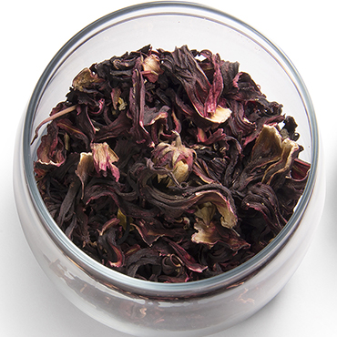
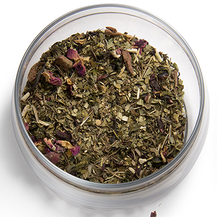
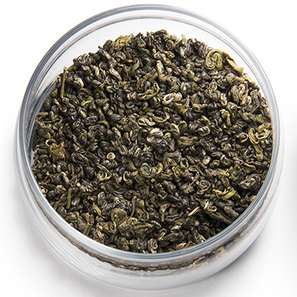
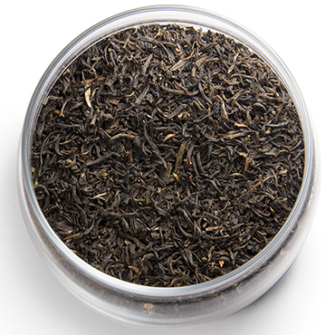
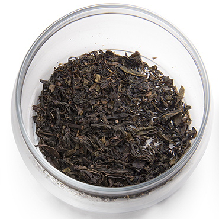
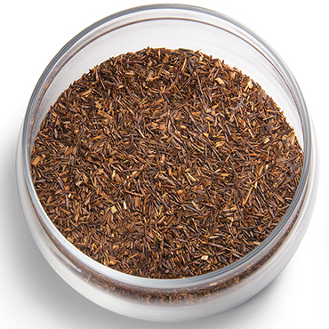
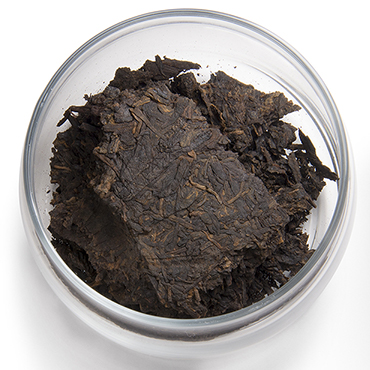

日本茶
ほとんどの日本茶は不発酵茶である緑茶である緑茶の多くは、蒸すことで加熱処理をして酸化・発酵を止めたのち、揉んで（揉まないものもある）、乾燥させる製法をとる。この方法は日本独自で発展したものであり、世界的にみても製茶過程で"蒸し"という工程が行われている国は他に類を見ない。

普通煎茶（ふつうせんちゃ）
煎茶は、緑茶の中で、もっともよく飲まれている代表的なお茶です。お茶は、茶園で栽培した生葉を加工することによって製品となります。生葉は、摘採した時点から酸化酵素の働きによって変化（発酵）が始まりますが、緑茶は新鮮な状態で熱処理（蒸す・炒る）することで酸化酵素の働きを止めた「不発酵茶」です。

てん茶・抹茶（てんちゃ・まっちゃ）
よしず等で覆いをし、直射日光を避けた茶園のチャの新芽を原料にします（直射日光を避けることでうまみが増します）。摘んだ新芽を蒸してそのまま揉まずに乾燥します。これを石臼で粉にすると抹茶になります。

玄米茶（げんまいちゃ）
水に浸して蒸した米を炒り、これに番茶や煎茶などをほぼ同量の割合で加えたお茶が「玄米茶」です。炒り米の香ばしさと、番茶や煎茶のさっぱりとした味わいが楽しめます。米が混入していることで、煎茶や番茶の使用量が少なくなることから、カフェインが少なく、お子さまやお年寄りの方にもおすすめできるお茶です。

中国茶
中国茶は製法によって大きく六大茶類（青茶・黒茶・緑茶・紅茶・白茶・黄茶）とその他のお茶（花茶等）に区分される。なお、台湾には独自のブランド（凍頂烏龍茶等）や特有の製茶方法（東方美人など）がある為、台湾で作られるお茶を中国大陸の茶と区別して台湾茶と称する場合もあるが、この項目では中国および台湾で製造され、かつ好まれて飲まれるものを「中国茶」とする。

鉄観音（てつかんのん）
烏龍茶の代表品種である鉄観音種を、特別なつくり方で仕上げた銘柄です。 安渓が主たる産地で、生産量は全烏龍茶の約5％程度。香味はふくよかで、水蜜桃に似ています。 日本でもっとも一般的なお茶。チャの新芽を蒸して揉（も）みながら乾燥したもの。

黄金桂（おうごんけい）
安渓（あんけい）地区でごく少量生産される烏龍茶の一種。「黄旦（こうたん）」という品種からつくられ、春茶の香りは非常にさわやかです。黄金桂という名前の由来は、その香りが遠くから香ってくるキンモクセイの香りに近いため、黄旦の「黄」とキンモクセイを意味する「桂」から付けられました。。

紅茶
チャの葉を完全に酸化発酵（さんかはっこう）させ、急速に乾燥させた茶。いれた時には濃いオレンジ色になり、香りが高いのが特徴です。インド、スリランカ、アフリカなどが主な産地です。

ダージリン（Darjeeling）
インドのダージリン地方は東ヒマラヤ山麓に位置し、茶樹は標高2,000mの高地から急峻な谷底に至る斜面に植えられています。日中の直射日光と夜間の低温による寒暖差で発生する霧が、独特の味と香りをつくり出す条件となっています。

アッサム（Assam）
北東インドのブラマプトラ河の両岸に広がるアッサム平原は、世界有数の雨量の多い土地であり、世界最大の紅茶産地です。甘みが強くコクのある味わいと濃い茶褐色の水色、芳醇な香りをもっています。